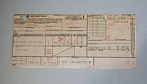
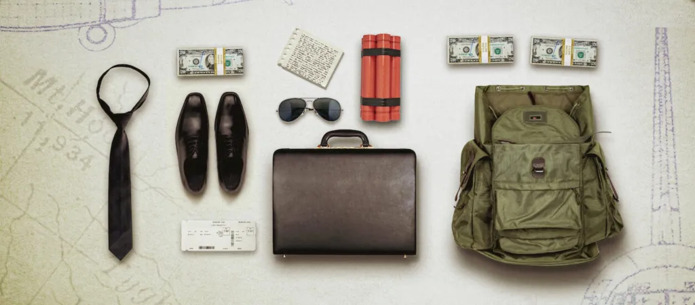

Il caso D.B. Cooper riguarda l'unico dirottamento aereo irrisolto nella storia, avvenuto il 24 novembre 1971 negli USA. Un uomo misterioso, con un paracadute e 200.000 dollari di riscatto, si lanciò da un Boeing 727 in volo, scomparendo nel nulla tra Portland e Seattle durante una tempesta, senza lasciare tracce.
- Il Dirottamento: L'uomo, presentatosi come Dan Cooper, imbarcò a Portland con una valigetta contenente una presunta bomba. Dopo il decollo, mostrò l'ordigno alla hostess, chiedendo 200.000 dollari e 4 paracadute.
- La Fuga: Atterrato a Seattle, ottenne i soldi e liberò i passeggeri. Ordinò poi al pilota di volare verso Città del Messico a bassa quota e velocità ridotta. Durante il volo, si lanciò nel buio, in mezzo a una tempesta, svanendo nel nulla.
- Le Indagini: L'FBI indagò per 45 anni senza successo, archiviando il caso nel 2016. Nonostante le ricerche, non fu mai trovato il corpo né la maggior parte del denaro.
- L'Identikit: Descritto come un uomo di circa 45 anni, alto 1,80 m, con capelli scuri e occhiali da sole, vestito con un completo scuro, camicia bianca e cravatta.


- Valigetta con "bomba": Cooper portava con sé una valigetta 24 ore che sosteneva contenere esplosivo. Ha mostrato all'assistente di volo dei candelotti rossi, cavi e una batteria, descrivendo l'ordigno come dinamite.
- Paracadute: Ha richiesto e ottenuto quattro paracadute (due primari e due di riserva) durante lo scalo tecnico all'aeroporto di Seattle-Tacoma. Si è lanciato utilizzando uno dei paracadute principali (di tipo militare) e uno di riserva, modificando quest'ultimo con pezzi di corda prelevati da un altro paracadute.
- Abbigliamento: Indossava un completo scuro, camicia bianca, cravatta nera con un fermacravatta di madreperla e occhiali da sole scuri.
- Strumenti per il lancio: Per facilitare il salto, ha richiesto che l'aereo (un Boeing 727) volasse a bassa quota (circa 3.000 metri) e bassa velocità, con il carrello abbassato e i flap estesi, e ha utilizzato la scala posteriore (o ventrale) dell'aeromobile per lanciarsi nel vuoto durante una tempesta.